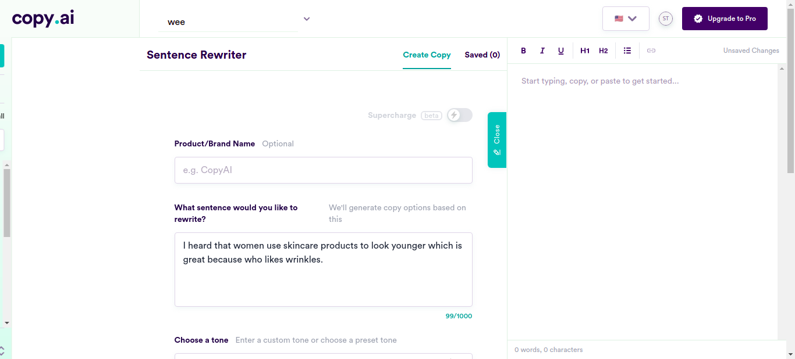
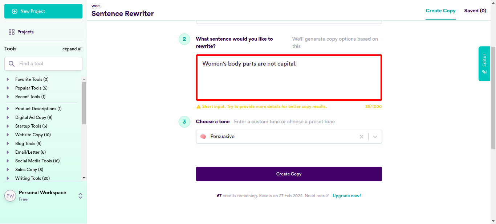
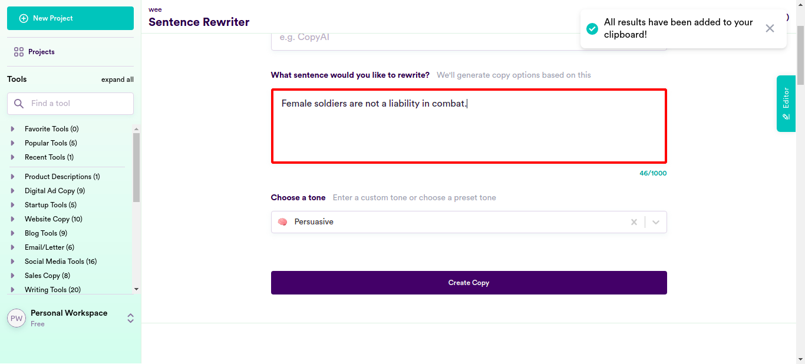
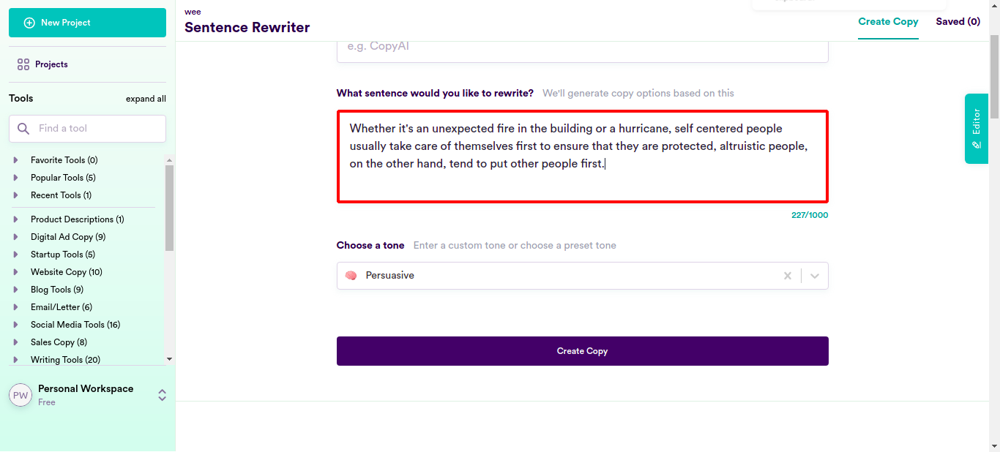
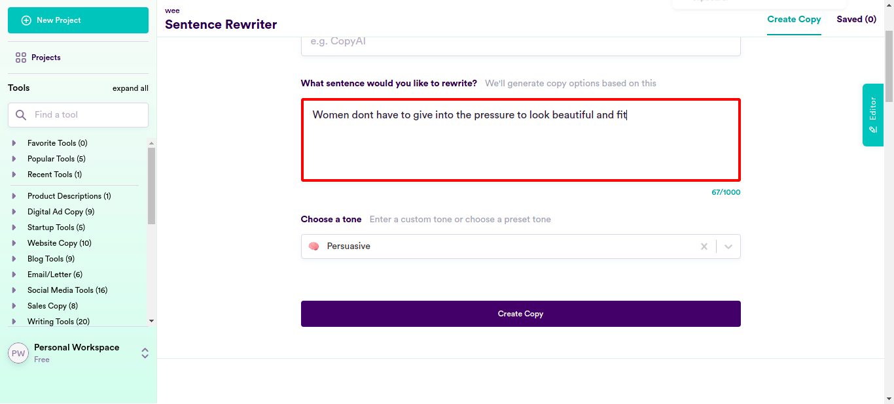
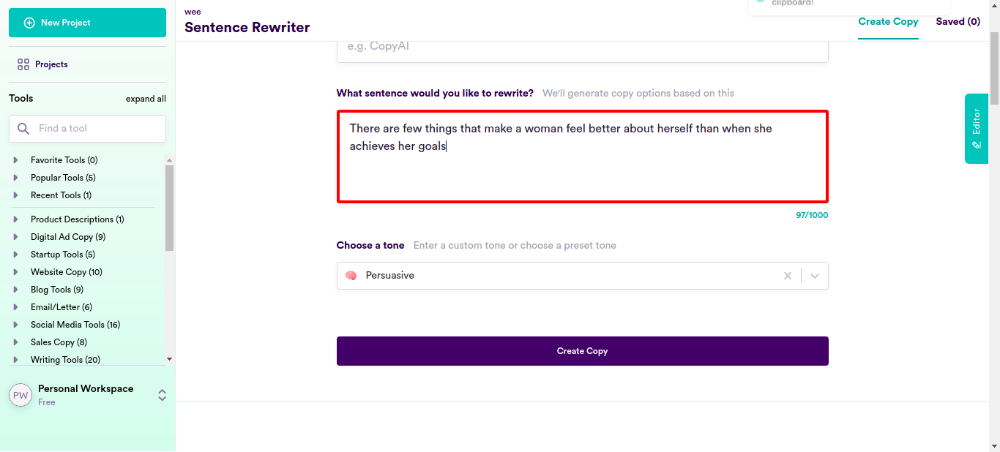
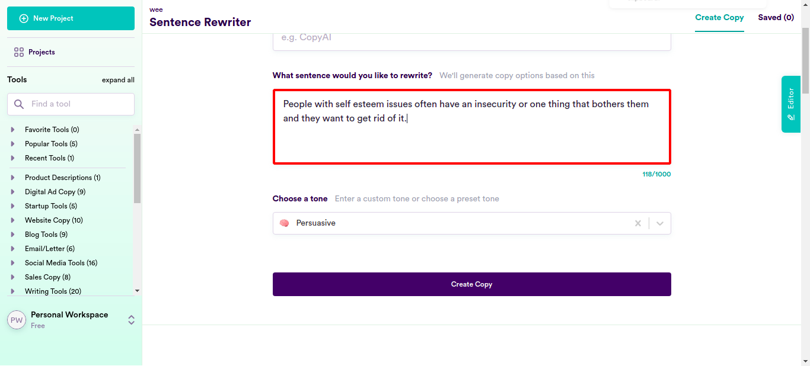
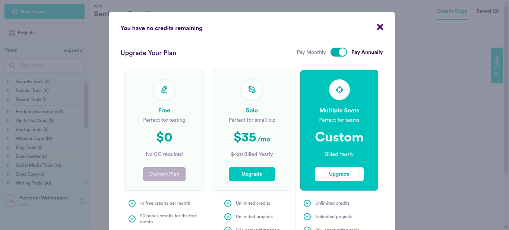

Classes
0 class(es) passed
1 class(es) failed, 0 others
Tests
0 test(s) passed
1 test(s) failed, 0 others
Steps
69 log(s) passed
6 log(s) failed, 1 others
Classes
-
Running on Chrome Jan 27, 2022 17:16:55 failJan 27, 2022 17:16:55 Jan 27, 2022 17:41:54 0h 24m 59s+83ms
-
testJan 27, 2022 17:16:55 0h 24m 59s+70ms fail
-
clickloginJan 27, 2022 17:17:01 0h 24m 52s+511ms fail
Status Timestamp Details check_circle 5:19:07 PM pressKey
TAB key pressed
check_circle 5:19:23 PM enterData
Entered Value "Women's body parts are not capital." in SentenceField
check_circle 5:19:42 PM enterData
Entered Value "Female soldiers are not a liability in combat." in SentenceField
check_circle 5:20:02 PM enterData
Entered Value "Combat roles will remain as safe as it is with the addition of ladies." in SentenceFieldcheck_circle 5:20:21 PM enterData
Entered Value "It is a fact as told by popular culture that women are the equals of men." in SentenceFieldcheck_circle 5:20:41 PM enterData
Entered Value "As rightly believed in the modern age of gender equality, there isn’t a job men can do that women can’t do as well, or even better." in SentenceFieldcheck_circle 5:21:01 PM enterData
Entered Value "Getting pregnant is a personal choice of women and it would not cause any problem for the unit." in SentenceFieldcheck_circle 5:21:20 PM enterData
Entered Value "Female soldiers are not a liability in combat." in SentenceFieldcheck_circle 5:21:40 PM enterData
Entered Value "In the army, females fight as well as their male counterparts." in SentenceFieldcheck_circle 5:21:59 PM enterData
Entered Value "Women make good soldiers." in SentenceFieldcheck_circle 5:22:19 PM enterData
Entered Value "Women too can carry a machine gun or be a sniper with necessary strength and fitness." in SentenceFieldcheck_circle 5:22:39 PM enterData
Entered Value "People with high level of emotivity and significant involvement with fashion, who are more impulsive than usual, are frequent consumers of fashion." in SentenceFieldcheck_circle 5:22:58 PM enterData
Entered Value "Women are not more impulsive than men" in SentenceFieldcheck_circle 5:23:17 PM enterData
Entered Value "Men are instinctive protectors" in SentenceFieldcheck_circle 5:23:37 PM enterData
Entered Value "A person's centre of balance is at a point at which their upper and lower body weight is equal." in SentenceFieldcheck_circle 5:23:57 PM enterData
Entered Value "Whether it's an unexpected fire in the building or a hurricane, self centered people usually take care of themselves first to ensure that they are protected, altruistic people, on the other hand, tend to put other people first." in SentenceField
check_circle 5:24:16 PM enterData
Entered Value "Dogs are protective by nature about their owners." in SentenceFieldcheck_circle 5:24:36 PM enterData
Entered Value "The paper was condemned from all sides for its lack of research." in SentenceFieldcheck_circle 5:24:55 PM enterData
Entered Value "Gender bias is the reason people experience some sort of abuse in their lifetime." in SentenceFieldcheck_circle 5:25:15 PM enterData
Entered Value "Given that some families spend anywhere from 60% to 80% of the total household income, this may be a want of higher standard of living." in SentenceFieldcheck_circle 5:25:34 PM enterData
Entered Value "Men are not always the breadwinners of the family" in SentenceFieldcheck_circle 5:25:54 PM enterData
Entered Value "From toothpaste to toilet paper, radio to the Internet, everything is focused upon in digital marketing." in SentenceFieldcheck_circle 5:26:14 PM enterData
Entered Value "Gender based marketing is a sign of gender bias" in SentenceFieldcheck_circle 5:26:33 PM enterData
Entered Value "advertisers wrongly built their brands in a world where women were assumed to be the homemakers" in SentenceFieldcheck_circle 5:26:52 PM enterData
Entered Value "Everyone is equal in the digital world." in SentenceFieldcheck_circle 5:27:12 PM enterData
Entered Value "There is a surge in the number of plastic surgeries that people are getting to attain their desired look." in SentenceFieldcheck_circle 5:27:32 PM enterData
Entered Value "Due to social media, teenagers are under a lot of pressure to look beautiful and fit." in SentenceFieldcheck_circle 5:27:52 PM enterData
Entered Value "Women dont have to give into the pressure to look beautiful and fit" in SentenceField
check_circle 5:28:12 PM enterData
Entered Value "There are few things that make a woman feel better about herself than when she achieves her goals" in SentenceField
check_circle 5:28:31 PM enterData
Entered Value "There has been a recent surge in people getting plastic surgery." in SentenceFieldcheck_circle 5:28:51 PM enterData
Entered Value "While plastic surgery is a controversial subject, there has been a surge in the number of people who are getting plastic surgery." in SentenceFieldcheck_circle 5:29:12 PM enterData
Entered Value "With the wide range of plastic surgeries available owing to medical advancement, it is no surprise that this boom in plastic surgeries has caught the attention ofpeople around the world." in SentenceFieldcheck_circle 5:29:31 PM enterData
Entered Value "People are partaking into this cosmetic surgery process at a rapid rate." in SentenceFieldcheck_circle 5:29:51 PM enterData
Entered Value "Opting to get a plastic surgery is a woman's choice and many women are happy with their bodies as they are" in SentenceFieldcheck_circle 5:30:11 PM enterData
Entered Value "Lip fillers are on the rise for those people who want their lips to look fuller." in SentenceField
check_circle 5:30:31 PM enterData
Entered Value "Most people with body image issues are constantly obsessing over their flaws and wishing they could fix them." in SentenceFieldcheck_circle 5:30:51 PM enterData
Entered Value "Many women are comfortable with their bodies" in SentenceFieldcheck_circle 5:31:10 PM enterData
Entered Value "More and more people are opting for cosmetic procedures every day." in SentenceFieldcheck_circle 5:31:30 PM enterData
Entered Value "People getting more concerned about their physical appearance has led to a surge in the number of plastic surgeries." in SentenceFieldcheck_circle 5:31:50 PM enterData
Entered Value "People are taking extreme measures to be safe in the pandemic." in SentenceFieldcheck_circle 5:32:10 PM enterData
Entered Value "As general trend and style change, they try to keep up by changing their outer looks. This is why there are a rise in people who are opting to have plastic surgery." in SentenceFieldcheck_circle 5:32:30 PM enterData
Entered Value "People are getting plastic surgeries to look how they personally desire." in SentenceFieldcheck_circle 5:32:50 PM enterData
Entered Value "People with self esteem issues often have an insecurity or one thing that bothers them and they want to get rid of it." in SentenceField
check_circle 5:33:10 PM enterData
Entered Value "You just got your first big promotion and are finally able to spend more money on your dream house." in SentenceFieldcheck_circle 5:33:29 PM enterData
Entered Value "Here are 8 signs you are pursuing a job only for the money." in SentenceFieldcheck_circle 5:33:49 PM enterData
Entered Value "But sometimes, it is okayto take up work for the sole purpose of monetary gain." in SentenceFieldcheck_circle 5:34:10 PM enterData
Entered Value "Have you ever had a partner that was only in the relationship for your money? It can be frustrating, but this article will get you back on track and make sure she never does it again." in SentenceFieldcheck_circle 5:34:30 PM enterData
Entered Value "No one wants to be in a relationship where their partner just wants to use them for their money." in SentenceFieldcheck_circle 5:34:50 PM enterData
Entered Value "that’s why a lot of people are applying for the job with the hope of getting money one way or another." in SentenceFieldcheck_circle 5:35:09 PM enterData
Entered Value "But how do you know if the annuity has good returns for your money?" in SentenceFieldcheck_circle 5:35:29 PM enterData
Entered Value "Does your partner want you to spend money on them all the time, but never wants to spend some on you?" in SentenceFieldcheck_circle 5:35:49 PM enterData
Entered Value "We have to admit that some people are a little bit materialistic." in SentenceFieldcheck_circle 5:36:09 PM enterData
Entered Value "it’s not so much about how to remain with a rich person, but how to recognize if your partner is using you for the monetary benefits." in SentenceFieldcheck_circle 5:36:30 PM enterData
Entered Value "If you continue to try to get a job and never seem to be able to find employment, then you should consider the possibilty that you may lack some necessary qualification." in SentenceFieldcheck_circle 5:36:50 PM enterData
Entered Value "Greedy people are the same — they want money and they want it bad." in SentenceFieldcheck_circle 5:37:10 PM enterData
Entered Value "No matter how much of a good person they are pretending to be in front of you, people can have other intentions." in SentenceField
check_circle 5:37:30 PM enterData
Entered Value "There are many people out there that are surprisingly only in a relationship for the money." in SentenceFieldcheck_circle 5:37:50 PM enterData
Entered Value "The drama school has raised students to be really great actors." in SentenceFieldcheck_circle 5:38:09 PM enterData
Entered Value "Girls have been raised to be strong" in SentenceFieldcheck_circle 5:38:29 PM enterData
Entered Value "They have been taught how to act civil and respectful." in SentenceFieldcheck_circle 5:38:48 PM enterData
Entered Value "Women don't exploit financial stability and are genuine." in SentenceFieldcheck_circle 5:39:08 PM enterData
Entered Value "Most people are in it for the money." in SentenceFieldcheck_circle 5:39:28 PM enterData
Entered Value "Most of us employees can’t imagine why the investors would be interested in us only for our money, not our product." in SentenceFieldcheck_circle 5:39:48 PM enterData
Entered Value "But what if I told you there were people out there, who bravely pursue money making hobby?" in SentenceFieldcheck_circle 5:40:08 PM enterData
Entered Value "After some time, the spouse starts to change, their behavior becomes irritating." in SentenceFieldcheck_circle 5:40:27 PM enterData
Entered Value "A man recently sparked outrage after calling all" in SentenceFieldcheck_circle 5:40:47 PM enterData
Entered Value "He only dates people who are of a certain political ideology." in SentenceFieldcheck_circle 5:41:07 PM enterData
Entered Value "Are there really millions of people who don't have access to education?" in SentenceFieldcheck_circle 5:41:26 PM enterData
Entered Value "and to think I use to date in highschool seriously." in SentenceFieldcancel 5:41:54 PM Exception Occured:Click to see
[java.base/jdk.internal.reflect.NativeConstructorAccessorImpl.newInstance0(Native Method)
java.base/jdk.internal.reflect.NativeConstructorAccessorImpl.newInstance(NativeConstructorAccessorImpl.java:62)
java.base/jdk.internal.reflect.DelegatingConstructorAccessorImpl.newInstance(DelegatingConstructorAccessorImpl.java:45)
java.base/java.lang.reflect.Constructor.newInstance(Constructor.java:490)
org.openqa.selenium.remote.http.W3CHttpResponseCodec.createException(W3CHttpResponseCodec.java:187)
org.openqa.selenium.remote.http.W3CHttpResponseCodec.decode(W3CHttpResponseCodec.java:122)
org.openqa.selenium.remote.http.W3CHttpResponseCodec.decode(W3CHttpResponseCodec.java:49)
org.openqa.selenium.remote.HttpCommandExecutor.execute(HttpCommandExecutor.java:158)
org.openqa.selenium.remote.service.DriverCommandExecutor.execute(DriverCommandExecutor.java:83)
org.openqa.selenium.remote.RemoteWebDriver.execute(RemoteWebDriver.java:552)
org.openqa.selenium.remote.RemoteWebDriver.findElement(RemoteWebDriver.java:323)
org.openqa.selenium.remote.RemoteWebDriver.findElementByXPath(RemoteWebDriver.java:428)
org.openqa.selenium.By$ByXPath.findElement(By.java:353)
org.openqa.selenium.remote.RemoteWebDriver.findElement(RemoteWebDriver.java:315)
jdk.internal.reflect.GeneratedMethodAccessor3.invoke(Unknown Source)
java.base/jdk.internal.reflect.DelegatingMethodAccessorImpl.invoke(DelegatingMethodAccessorImpl.java:43)
java.base/java.lang.reflect.Method.invoke(Method.java:566)
org.openqa.selenium.support.events.EventFiringWebDriver.lambda$new$1(EventFiringWebDriver.java:105)
com.sun.proxy.$Proxy17.findElement(Unknown Source)
org.openqa.selenium.support.events.EventFiringWebDriver.findElement(EventFiringWebDriver.java:194)
org.openqa.selenium.support.pagefactory.DefaultElementLocator.findElement(DefaultElementLocator.java:69)
org.openqa.selenium.support.pagefactory.internal.LocatingElementHandler.invoke(LocatingElementHandler.java:38)
com.sun.proxy.$Proxy21.click(Unknown Source)
com.ttn.WebAutomation.pageObjects.Slack.senddatafromcsv(Slack.java:170)
com.ttn.WebAutomation.tests.tsp.test.clicklogin(test.java:94)
java.base/jdk.internal.reflect.NativeMethodAccessorImpl.invoke0(Native Method)
java.base/jdk.internal.reflect.NativeMethodAccessorImpl.invoke(NativeMethodAccessorImpl.java:62)
java.base/jdk.internal.reflect.DelegatingMethodAccessorImpl.invoke(DelegatingMethodAccessorImpl.java:43)
java.base/java.lang.reflect.Method.invoke(Method.java:566)
org.testng.internal.MethodInvocationHelper.invokeMethod(MethodInvocationHelper.java:134)
org.testng.internal.TestInvoker.invokeMethod(TestInvoker.java:597)
org.testng.internal.TestInvoker.invokeTestMethod(TestInvoker.java:173)
org.testng.internal.MethodRunner.runInSequence(MethodRunner.java:46)
org.testng.internal.TestInvoker$MethodInvocationAgent.invoke(TestInvoker.java:816)
org.testng.internal.TestInvoker.invokeTestMethods(TestInvoker.java:146)
org.testng.internal.TestMethodWorker.invokeTestMethods(TestMethodWorker.java:146)
org.testng.internal.TestMethodWorker.run(TestMethodWorker.java:128)
java.base/java.util.ArrayList.forEach(ArrayList.java:1541)
org.testng.TestRunner.privateRun(TestRunner.java:766)
org.testng.TestRunner.run(TestRunner.java:587)
org.testng.SuiteRunner.runTest(SuiteRunner.java:384)
org.testng.SuiteRunner.runSequentially(SuiteRunner.java:378)
org.testng.SuiteRunner.privateRun(SuiteRunner.java:337)
org.testng.SuiteRunner.run(SuiteRunner.java:286)
org.testng.SuiteRunnerWorker.runSuite(SuiteRunnerWorker.java:53)
org.testng.SuiteRunnerWorker.run(SuiteRunnerWorker.java:96)
org.testng.TestNG.runSuitesSequentially(TestNG.java:1187)
org.testng.TestNG.runSuitesLocally(TestNG.java:1109)
org.testng.TestNG.runSuites(TestNG.java:1039)
org.testng.TestNG.run(TestNG.java:1007)
com.intellij.rt.testng.IDEARemoteTestNG.run(IDEARemoteTestNG.java:66)
com.intellij.rt.testng.RemoteTestNGStarter.main(RemoteTestNGStarter.java:109)]cancel 5:41:54 PM clicklogin FAILED cancel 5:41:54 PM org.openqa.selenium.NoSuchElementException: no such element: Unable to locate element: {"method":"xpath","selector":"//button[normalize-space()='Copy All Results']"} (Session info: chrome=96.0.4664.110) For documentation on this error, please visit: https://www.seleniumhq.org/exceptions/no_such_element.html Build info: version: '3.141.59', revision: 'e82be7d358', time: '2018-11-14T08:17:03' System info: host: 'ttnpl', ip: '127.0.1.1', os.name: 'Linux', os.arch: 'amd64', os.version: '5.4.0-94-generic', java.version: '11.0.13' Driver info: org.openqa.selenium.chrome.ChromeDriver Capabilities {acceptInsecureCerts: false, browserName: chrome, browserVersion: 96.0.4664.110, chrome: {chromedriverVersion: 96.0.4664.45 (76e4c1bb2ab46..., userDataDir: /tmp/.com.google.Chrome.L2x3dB}, goog:chromeOptions: {debuggerAddress: localhost:34921}, javascriptEnabled: true, networkConnectionEnabled: false, pageLoadStrategy: normal, platform: LINUX, platformName: LINUX, proxy: Proxy(), setWindowRect: true, strictFileInteractability: false, timeouts: {implicit: 0, pageLoad: 300000, script: 30000}, unhandledPromptBehavior: dismiss and notify, webauthn:extension:credBlob: true, webauthn:extension:largeBlob: true, webauthn:virtualAuthenticators: true} Session ID: 6723a4ed7ed465b1c299a86790c503f5 *** Element info: {Using=xpath, value=//button[normalize-space()='Copy All Results']} at java.base/jdk.internal.reflect.NativeConstructorAccessorImpl.newInstance0(Native Method) at java.base/jdk.internal.reflect.NativeConstructorAccessorImpl.newInstance(NativeConstructorAccessorImpl.java:62) at java.base/jdk.internal.reflect.DelegatingConstructorAccessorImpl.newInstance(DelegatingConstructorAccessorImpl.java:45) at java.base/java.lang.reflect.Constructor.newInstance(Constructor.java:490) at org.openqa.selenium.remote.http.W3CHttpResponseCodec.createException(W3CHttpResponseCodec.java:187) at org.openqa.selenium.remote.http.W3CHttpResponseCodec.decode(W3CHttpResponseCodec.java:122) at org.openqa.selenium.remote.http.W3CHttpResponseCodec.decode(W3CHttpResponseCodec.java:49) at org.openqa.selenium.remote.HttpCommandExecutor.execute(HttpCommandExecutor.java:158) at org.openqa.selenium.remote.service.DriverCommandExecutor.execute(DriverCommandExecutor.java:83) at org.openqa.selenium.remote.RemoteWebDriver.execute(RemoteWebDriver.java:552) at org.openqa.selenium.remote.RemoteWebDriver.findElement(RemoteWebDriver.java:323) at org.openqa.selenium.remote.RemoteWebDriver.findElementByXPath(RemoteWebDriver.java:428) at org.openqa.selenium.By$ByXPath.findElement(By.java:353) at org.openqa.selenium.remote.RemoteWebDriver.findElement(RemoteWebDriver.java:315) at jdk.internal.reflect.GeneratedMethodAccessor3.invoke(Unknown Source) at java.base/jdk.internal.reflect.DelegatingMethodAccessorImpl.invoke(DelegatingMethodAccessorImpl.java:43) at java.base/java.lang.reflect.Method.invoke(Method.java:566) at org.openqa.selenium.support.events.EventFiringWebDriver.lambda$new$1(EventFiringWebDriver.java:105) at com.sun.proxy.$Proxy17.findElement(Unknown Source) at org.openqa.selenium.support.events.EventFiringWebDriver.findElement(EventFiringWebDriver.java:194) at org.openqa.selenium.support.pagefactory.DefaultElementLocator.findElement(DefaultElementLocator.java:69) at org.openqa.selenium.support.pagefactory.internal.LocatingElementHandler.invoke(LocatingElementHandler.java:38) at com.sun.proxy.$Proxy21.click(Unknown Source) at com.ttn.WebAutomation.pageObjects.Slack.senddatafromcsv(Slack.java:170) at com.ttn.WebAutomation.tests.tsp.test.clicklogin(test.java:94) at java.base/jdk.internal.reflect.NativeMethodAccessorImpl.invoke0(Native Method) at java.base/jdk.internal.reflect.NativeMethodAccessorImpl.invoke(NativeMethodAccessorImpl.java:62) at java.base/jdk.internal.reflect.DelegatingMethodAccessorImpl.invoke(DelegatingMethodAccessorImpl.java:43) at java.base/java.lang.reflect.Method.invoke(Method.java:566) at org.testng.internal.MethodInvocationHelper.invokeMethod(MethodInvocationHelper.java:134) at org.testng.internal.TestInvoker.invokeMethod(TestInvoker.java:597) at org.testng.internal.TestInvoker.invokeTestMethod(TestInvoker.java:173) at org.testng.internal.MethodRunner.runInSequence(MethodRunner.java:46) at org.testng.internal.TestInvoker$MethodInvocationAgent.invoke(TestInvoker.java:816) at org.testng.internal.TestInvoker.invokeTestMethods(TestInvoker.java:146) at org.testng.internal.TestMethodWorker.invokeTestMethods(TestMethodWorker.java:146) at org.testng.internal.TestMethodWorker.run(TestMethodWorker.java:128) at java.base/java.util.ArrayList.forEach(ArrayList.java:1541) at org.testng.TestRunner.privateRun(TestRunner.java:766) at org.testng.TestRunner.run(TestRunner.java:587) at org.testng.SuiteRunner.runTest(SuiteRunner.java:384) at org.testng.SuiteRunner.runSequentially(SuiteRunner.java:378) at org.testng.SuiteRunner.privateRun(SuiteRunner.java:337) at org.testng.SuiteRunner.run(SuiteRunner.java:286) at org.testng.SuiteRunnerWorker.runSuite(SuiteRunnerWorker.java:53) at org.testng.SuiteRunnerWorker.run(SuiteRunnerWorker.java:96) at org.testng.TestNG.runSuitesSequentially(TestNG.java:1187) at org.testng.TestNG.runSuitesLocally(TestNG.java:1109) at org.testng.TestNG.runSuites(TestNG.java:1039) at org.testng.TestNG.run(TestNG.java:1007) at com.intellij.rt.testng.IDEARemoteTestNG.run(IDEARemoteTestNG.java:66) at com.intellij.rt.testng.RemoteTestNGStarter.main(RemoteTestNGStarter.java:109)cancel 5:41:54 PM NoSuchElementException info_outline 5:41:54 PM Test Completed cancel 5:41:54 PM clicklogin - Test Case Failed cancel 5:41:54 PM org.openqa.selenium.NoSuchElementException: no such element: Unable to locate element: {"method":"xpath","selector":"//button[normalize-space()='Copy All Results']"} (Session info: chrome=96.0.4664.110) For documentation on this error, please visit: https://www.seleniumhq.org/exceptions/no_such_element.html Build info: version: '3.141.59', revision: 'e82be7d358', time: '2018-11-14T08:17:03' System info: host: 'ttnpl', ip: '127.0.1.1', os.name: 'Linux', os.arch: 'amd64', os.version: '5.4.0-94-generic', java.version: '11.0.13' Driver info: org.openqa.selenium.chrome.ChromeDriver Capabilities {acceptInsecureCerts: false, browserName: chrome, browserVersion: 96.0.4664.110, chrome: {chromedriverVersion: 96.0.4664.45 (76e4c1bb2ab46..., userDataDir: /tmp/.com.google.Chrome.L2x3dB}, goog:chromeOptions: {debuggerAddress: localhost:34921}, javascriptEnabled: true, networkConnectionEnabled: false, pageLoadStrategy: normal, platform: LINUX, platformName: LINUX, proxy: Proxy(), setWindowRect: true, strictFileInteractability: false, timeouts: {implicit: 0, pageLoad: 300000, script: 30000}, unhandledPromptBehavior: dismiss and notify, webauthn:extension:credBlob: true, webauthn:extension:largeBlob: true, webauthn:virtualAuthenticators: true} Session ID: 6723a4ed7ed465b1c299a86790c503f5 *** Element info: {Using=xpath, value=//button[normalize-space()='Copy All Results']} - Test Case Failed
-
-
info_outline
check_circle
cancel
cancel
error
warning
redo
clear
Exceptions
-
org.openqa.selenium.NoSuchElementException
1
Timestamp
TestName
Status
Jan 27, 2022 17:17:01
Running on Chrome.test.clicklogin
org.openqa.selenium.NoSuchElementException: no such element: Unable to locate element: {"method":"xpath","selector":"//button[normalize-space()='Copy All Results']"}
(Session info: chrome=96.0.4664.110)
For documentation on this error, please visit: https://www.seleniumhq.org/exceptions/no_such_element.html
Build info: version: '3.141.59', revision: 'e82be7d358', time: '2018-11-14T08:17:03'
System info: host: 'ttnpl', ip: '127.0.1.1', os.name: 'Linux', os.arch: 'amd64', os.version: '5.4.0-94-generic', java.version: '11.0.13'
Driver info: org.openqa.selenium.chrome.ChromeDriver
Capabilities {acceptInsecureCerts: false, browserName: chrome, browserVersion: 96.0.4664.110, chrome: {chromedriverVersion: 96.0.4664.45 (76e4c1bb2ab46..., userDataDir: /tmp/.com.google.Chrome.L2x3dB}, goog:chromeOptions: {debuggerAddress: localhost:34921}, javascriptEnabled: true, networkConnectionEnabled: false, pageLoadStrategy: normal, platform: LINUX, platformName: LINUX, proxy: Proxy(), setWindowRect: true, strictFileInteractability: false, timeouts: {implicit: 0, pageLoad: 300000, script: 30000}, unhandledPromptBehavior: dismiss and notify, webauthn:extension:credBlob: true, webauthn:extension:largeBlob: true, webauthn:virtualAuthenticators: true}
Session ID: 6723a4ed7ed465b1c299a86790c503f5
*** Element info: {Using=xpath, value=//button[normalize-space()='Copy All Results']}
at java.base/jdk.internal.reflect.NativeConstructorAccessorImpl.newInstance0(Native Method)
at java.base/jdk.internal.reflect.NativeConstructorAccessorImpl.newInstance(NativeConstructorAccessorImpl.java:62)
at java.base/jdk.internal.reflect.DelegatingConstructorAccessorImpl.newInstance(DelegatingConstructorAccessorImpl.java:45)
at java.base/java.lang.reflect.Constructor.newInstance(Constructor.java:490)
at org.openqa.selenium.remote.http.W3CHttpResponseCodec.createException(W3CHttpResponseCodec.java:187)
at org.openqa.selenium.remote.http.W3CHttpResponseCodec.decode(W3CHttpResponseCodec.java:122)
at org.openqa.selenium.remote.http.W3CHttpResponseCodec.decode(W3CHttpResponseCodec.java:49)
at org.openqa.selenium.remote.HttpCommandExecutor.execute(HttpCommandExecutor.java:158)
at org.openqa.selenium.remote.service.DriverCommandExecutor.execute(DriverCommandExecutor.java:83)
at org.openqa.selenium.remote.RemoteWebDriver.execute(RemoteWebDriver.java:552)
at org.openqa.selenium.remote.RemoteWebDriver.findElement(RemoteWebDriver.java:323)
at org.openqa.selenium.remote.RemoteWebDriver.findElementByXPath(RemoteWebDriver.java:428)
at org.openqa.selenium.By$ByXPath.findElement(By.java:353)
at org.openqa.selenium.remote.RemoteWebDriver.findElement(RemoteWebDriver.java:315)
at jdk.internal.reflect.GeneratedMethodAccessor3.invoke(Unknown Source)
at java.base/jdk.internal.reflect.DelegatingMethodAccessorImpl.invoke(DelegatingMethodAccessorImpl.java:43)
at java.base/java.lang.reflect.Method.invoke(Method.java:566)
at org.openqa.selenium.support.events.EventFiringWebDriver.lambda$new$1(EventFiringWebDriver.java:105)
at com.sun.proxy.$Proxy17.findElement(Unknown Source)
at org.openqa.selenium.support.events.EventFiringWebDriver.findElement(EventFiringWebDriver.java:194)
at org.openqa.selenium.support.pagefactory.DefaultElementLocator.findElement(DefaultElementLocator.java:69)
at org.openqa.selenium.support.pagefactory.internal.LocatingElementHandler.invoke(LocatingElementHandler.java:38)
at com.sun.proxy.$Proxy21.click(Unknown Source)
at com.ttn.WebAutomation.pageObjects.Slack.senddatafromcsv(Slack.java:170)
at com.ttn.WebAutomation.tests.tsp.test.clicklogin(test.java:94)
at java.base/jdk.internal.reflect.NativeMethodAccessorImpl.invoke0(Native Method)
at java.base/jdk.internal.reflect.NativeMethodAccessorImpl.invoke(NativeMethodAccessorImpl.java:62)
at java.base/jdk.internal.reflect.DelegatingMethodAccessorImpl.invoke(DelegatingMethodAccessorImpl.java:43)
at java.base/java.lang.reflect.Method.invoke(Method.java:566)
at org.testng.internal.MethodInvocationHelper.invokeMethod(MethodInvocationHelper.java:134)
at org.testng.internal.TestInvoker.invokeMethod(TestInvoker.java:597)
at org.testng.internal.TestInvoker.invokeTestMethod(TestInvoker.java:173)
at org.testng.internal.MethodRunner.runInSequence(MethodRunner.java:46)
at org.testng.internal.TestInvoker$MethodInvocationAgent.invoke(TestInvoker.java:816)
at org.testng.internal.TestInvoker.invokeTestMethods(TestInvoker.java:146)
at org.testng.internal.TestMethodWorker.invokeTestMethods(TestMethodWorker.java:146)
at org.testng.internal.TestMethodWorker.run(TestMethodWorker.java:128)
at java.base/java.util.ArrayList.forEach(ArrayList.java:1541)
at org.testng.TestRunner.privateRun(TestRunner.java:766)
at org.testng.TestRunner.run(TestRunner.java:587)
at org.testng.SuiteRunner.runTest(SuiteRunner.java:384)
at org.testng.SuiteRunner.runSequentially(SuiteRunner.java:378)
at org.testng.SuiteRunner.privateRun(SuiteRunner.java:337)
at org.testng.SuiteRunner.run(SuiteRunner.java:286)
at org.testng.SuiteRunnerWorker.runSuite(SuiteRunnerWorker.java:53)
at org.testng.SuiteRunnerWorker.run(SuiteRunnerWorker.java:96)
at org.testng.TestNG.runSuitesSequentially(TestNG.java:1187)
at org.testng.TestNG.runSuitesLocally(TestNG.java:1109)
at org.testng.TestNG.runSuites(TestNG.java:1039)
at org.testng.TestNG.run(TestNG.java:1007)
at com.intellij.rt.testng.IDEARemoteTestNG.run(IDEARemoteTestNG.java:66)
at com.intellij.rt.testng.RemoteTestNGStarter.main(RemoteTestNGStarter.java:109)
org.openqa.selenium.NoSuchElementException
1
| Timestamp | TestName | Status |
|---|---|---|
| Jan 27, 2022 17:17:01 | Running on Chrome.test.clicklogin | |
Dashboard
Classes
1
Tests
1
Steps
76
Start
Jan 27, 2022 17:16:55
End
Jan 27, 2022 17:41:54
Time Taken
1,499,588ms
Environment
| Name | Value |
|---|---|
| Application Name | Demo |
| User Name | Demo |
| Environment | uat |
| OS | Linux |